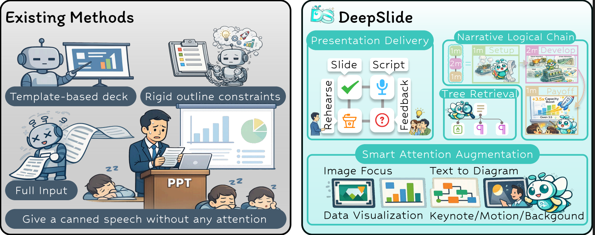
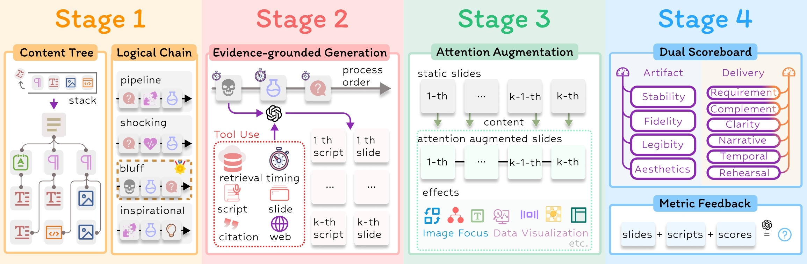

DeepSlide: From Artifacts to Presentation Delivery
Abstract
A high-quality talk is not mainly determined by whether the static slides “look nice”. What matters more is whether information is organized and delivered under audience cognition and attention constraints—including narrative coherence, timing and pacing control, attention guidance, and rehearsal readiness. In other words, artifact quality ≠ delivery quality.
Video
Figure 1

Comparison with existing methods: DeepSlide targets end-to-end presentation delivery rather than deck
authoring only.
Figure 2

Overview of the four-stage framework: a closed-loop delivery workflow from requirement clarification to
generation/enhancement, and finally rehearsal/evaluation.